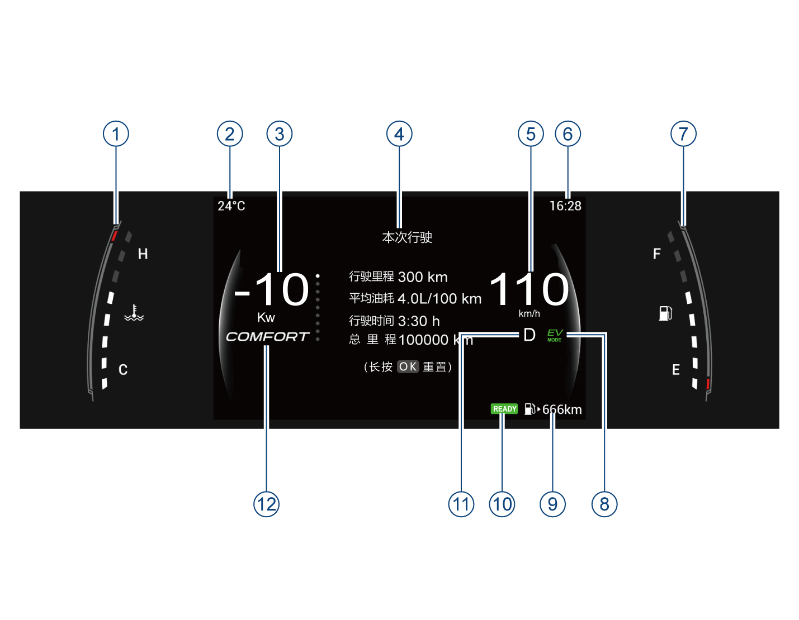

– CHARGE区域，指示整车回收能量时的功率。
– ECO区域，表示正以节能方式驾驶车辆。
– POWER区域，指示整车输出的功率。

7英寸TFT屏组合仪表（全局主题）*
① 发动机冷却液温度表
② 车外温度
③ 功率表
④ 组合仪表显示屏
⑤ 车速表
⑥ 时间显示
⑦ 燃油表
⑧ 纯电模式显示
⑨ 续航里程
⑩ 可行驶状态
⑪ 挡位显示
⑫ 驾驶模式

25英寸组合仪表（有机主题）*
① 组合仪表显示屏
② 车外温度
③ 功率表
④ 车速表
⑤ 时间显示
⑥ 组合仪表显示屏
⑦ 燃油表
⑧ 续航里程
⑨ 驾驶模式
⑩ 挡位显示
⑪ 纯电模式显示
⑫ 可行驶状态
⑬ 电量表
–本车型7英寸TFT屏组合仪表共有3个主题（全局主题、运动主题及极速主题）显示，现仅以全局主题为例；10.25英寸TFT屏组合仪表共有4个主题（有机主题、全地图主题、科技主题及极速主题）显示，现仅以有机主题为例。
–不同主题可通过方向盘VIEW按键切换，也可以通过中控设置与驾驶模式绑定后，切换驾驶模式改变仪表主题。
–根据不同配置仪表显示可能有所不同，图片仅供参考，具体请以实车为准。
指示车辆当前驱动功率，单位为KW，指示范围最大175KW。
– CHARGE区域，指示整车回收能量时的功率。
– ECO区域，表示正以节能方式驾驶车辆。
– POWER区域，指示整车输出的功率。
显示信息包括：行车信息、G值表、计时器*、车辆状态、能耗趋势图、导航信息*、驾驶辅助*、报警中心、能量流、发动机转速及音响娱乐等信息。
– 高温情况下组合仪表可能会触发保护，显示屏亮度变暗，待车辆温度降低后即可恢复，该情况为正常现象。
– 若组合仪表显示屏异常显示时，为安全考虑应立即停车，并联系广汽传祺特约店进行检修。
发动机冷却液温度表（水温表）用于指示发动机冷却液当前温度。
– 指示范围C~H，其中“C”表示低温度，“H”表示高温度。
– 车辆启动后，水温表根据不同温度点亮相应的格数，车辆的工作温度会根据气温与车辆负荷，产生各种变化。
– 水温表偏高的情况：炎热天气长途爬坡时；高速行车后降低车速或停车时；在交通繁忙地区，使用空调系统并让发动机长时间怠速运转时；拖有尾车时等。
– 水温表偏低的情况：寒冷天气冷启动后热车未充分时；寒冷天气暖风挡位/风量较大时等。
指示车辆当前动力电池电量，指示范围L~H，其中L表示低电量，H表示高电量，根据不同电量点亮相应的格数，未点亮格子为黑色的底色。
– 根据接收到的信号显示车辆当前使用的驾驶模式。
– 仪表可以显示3种驾驶模式（COMFORT、ECO、SPORT），切换驾驶模式时，仪表的驾驶模式会发生相应变化。
车速表用于指示车辆当前车速，单位为km/h。
–
燃油表用于指示车辆油箱内当前剩余燃油量。
– 指示范围E~F，其中“E”表示燃油箱空，“F”表示燃油箱加满。
–
根据燃油箱剩余燃油量点亮相应的格数，当没有或仅第1格格子点亮时，表示燃油箱内燃油不足，组合仪表的 指示灯黄色闪烁，提醒驾驶员燃油不足，请尽快加油。
指示灯黄色闪烁，提醒驾驶员燃油不足，请尽快加油。
– 续航里程固定位置常显在屏幕右下角，指示图标为燃油指示灯。
– 续航里程低于50km或者油量低于10%时，续航里程会显示“低”，顶部弹窗文字同时提醒用户及时加油。
– 根据接收到的信号显示P、R、N、D等车辆当前挡位信息。
– 纯电模式指示车辆处于纯电运行状态。仪表显示为EV MODE。
– 行驶准备用来指示车辆行驶准备已完成，当车辆启动后，车辆完成行驶准备，仪表显示为READY。
– 显示范围0km~999999km
整车电源在“ON”挡位时，上拨/下拨方向盘左侧OK拨钮，可切换显示信息界面。
行车信息界面包含：本次行驶、累计行驶及总里程。

本次行驶：指车辆打开整车电源后单次行驶内的行车信息（行驶里程/平均油耗/行驶时间），单次点火循环会重新清零。

累计行驶：指车辆自从上次复位之后的行车信息（行驶里程/平均油耗/行驶时间），可以长按“OK”按键重置。总里程信息在此界面显示，不可以重新设置。

整车电源在“ON”挡位时，上拨/下拨方向盘左侧OK拨钮，切换至行车信息界面。
行车信息里包含本次行驶和累计行驶总里程。
– 本次行驶：指车辆打开整车电源后单次行驶内的行车信息，包括行驶里程、平均油耗、行驶时间信息，该参数不可以重置。
– 累计行驶：指车辆自从上次复位之后的行车信息，包含行驶里程、平均油耗、行驶时间信息，可以长按“OK”按键重置。
– 总里程：指车辆的行驶里程，不可以重新设置。

整车电源在“ON”挡位，通过短按方向盘左侧“VIEW”按键，进行仪表主题设置。
– 短按“VIEW”按键，7英寸组合仪表主题在“运动主题、全局主题及极速主题”之间循环切换；10.25英寸组合仪表主题在“科技主题、有机主题、全地图主题及极速主题”之间循环切换。
仪表主题也可以通过中控设置与驾驶模式绑定后，切换驾驶模式改变仪表主题。

整车电源在“ON”挡位，车速为零时，通过音响主机“系统设置→屏幕显示→仪表显示”，进行以下功能设置：
1. 仪表音量
– 仪表声音可选择“低”、“中”、“高”三种模式，默认是“中”。
2. 油耗/里程
– 用户可根据个人习惯选择L/100km,km或km/L,km或mpg（英）,mi或mpg（美）,mi作为油耗/里程的单位，默认是L/100km,km。
3. 温度单位
– 用户可根据个人习惯选择摄氏温度“℃”或华氏温度“℉”两种温度单位显示模式，默认是℃。
4. 压强单位
– 用户可根据个人习惯选择 “kPa”、“bar”、“psi”三种压强单位显示模式，默认是kPa。
5. 仪表背光
– 用户可根据个人习惯选择1~8不同等级背光，默认4级。
6. 后排安全带提醒
– 打开该功能后，后排乘客如未系安全带，将给予提醒。
7. 重置维护提醒
– 点击“重置”按键可重置维护提醒里程。
8. 维护提醒周期
– 用户可根据个人需求设置维护提醒周期，包含“5000km”、“7500km”、“10000km”等选项。
9. 默认设置
– 点击“恢复”按键，仪表显示设置项全部恢复默认值。
– 菜单设置内容仅以10.25英寸组合仪表为例，7英寸组合仪表菜单设置内容类似，具体功能及界面请以实车配置为准。
– 菜单设置如有差异，请以实车配置为准。

– G值表体现车辆的加速状态，中间红点模拟驾驶员的车内姿态。
– G值表旁边四个圈代表方向盘转角，加速踏板开度，制动踏板深度。

– 计时器可以通过自定义按键激活。当中控设置自定义按键为计时器功能且车辆启动后，通过方向盘自定义按键，可以激活计时器功能。

– 车辆状态：包含胎温、胎压、车门、前机舱盖和行李箱状态，还有安全带报警信息。当有异常信息会主动弹出该界面。

– 能耗趋势图体现最近50km的油耗信息。每1km更新一次，此界面平均油耗体现的是最近50km的平均油耗。

– 当驾驶辅助功能开启时，仪表将显示相应的驾驶辅助信息，包括本车和左右车道线信息。当检测到前车时，可以显示前车和跟车时距信息。
自适应巡航控制系统、前碰缓解系统、车道偏离辅助系统、集成式巡航辅助系统在该界面显示。
仅10.25英寸仪表的科技主题支持左右车道线信息。

报警中心用于保存报警信息，报警信息会以文字、图片或蜂鸣声等来显示车辆当前的状态，驾驶员应时常留意是否有报警信息。
– 若整车状态无异常，不显示报警中心。
– 若车辆出现故障或者激活/关闭某些功能时，组合仪表会在屏幕上方弹出相应的文字或者图片信息提示驾驶员当前车辆的状态。
– 报警信息弹出后，通过方向盘左侧“OK”拨钮确认报警信息，部分报警信息会存入报警中心。如无操作数秒后，报警信息再次显示。
图示以10.25英寸组合仪表有机主题为示例，仅供参考，请以实车为准。
当多个报警信息存在时，必须将仪表屏幕上的报警信息逐个阅读确认后，才可使用方向盘“OK”按键操作其它功能。

– 当音响系统连接手机蓝牙后，有通话时，电话信息在组合仪表显示屏的下方显示。
– 当使用B-CALL*或E-CALL*时，电话信息显示B-CALL*或E-CALL*状态。
图示以10.25英寸组合仪表有机主题为示例，仅供参考，请以实车为准。

– 整车电源在“ON”挡位时，按压方向盘右侧拨钮切换至音响娱乐信息界面。当音响系统未开启时，音响娱乐信息界面会显示“多媒体信息无法获取”提示。

– 当音响系统开启时，音响娱乐信息界面显示当前的播放信息。
— 页面到底了 —